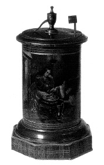

ŞEKİL 76. “Döbereiner çakmağı” (1840): Çakmaktaşsız ve de manyetosuz ilk çakmak niteliğindeki bu alette, hava ile hidrojen gazı karışımı, toz halindeki platin ya da süngerimsi platin üzerine gönderilmekte, orada katalitik bir etki sonucu hidrojen tutuşmakta ve küçük bir alevle yanmaktaydı (Alman Eczacılık Müzesi, Heidelberg).47
Döbereiner, Johann Wolfgang von Goethe’ye, kendi buluşu olan bir “Döbereiner çakmağı”nı armağan etmiş ve Goethe de ona, 7 Ekim 1826 tarihli mektubu ile teşekkür etmiştir. Diğer adlarıyla “platin çakmağı”, “hidrojen lambası” ya da “hidrojen çakmağı” da denilen Döbereiner çakmağı, 1840’larda sürtmeli kibritlerin yaygınlaşmasına dek ev ve laboratuvarlarda kullanılmıştır. Döbereiner ve benzeri hidrojenli çakmakların, fazla pratik ve portatif olmadıkları anlaşılmaktadır. Bunların başlıca olumsuz yanları ara sıra hidrojenin patlayarak kazalara yol açması, pahalı olması, taşınma güçlüğü ve içine sık sık sülfürik asit takviyesini gerektirmesiydi. Böyle hidrojenli çakmaklar yine de 1880’lere dek Almanya ve İngiltere’de, özellikle varlıklı kesimlerde çok benimsenmişti.153